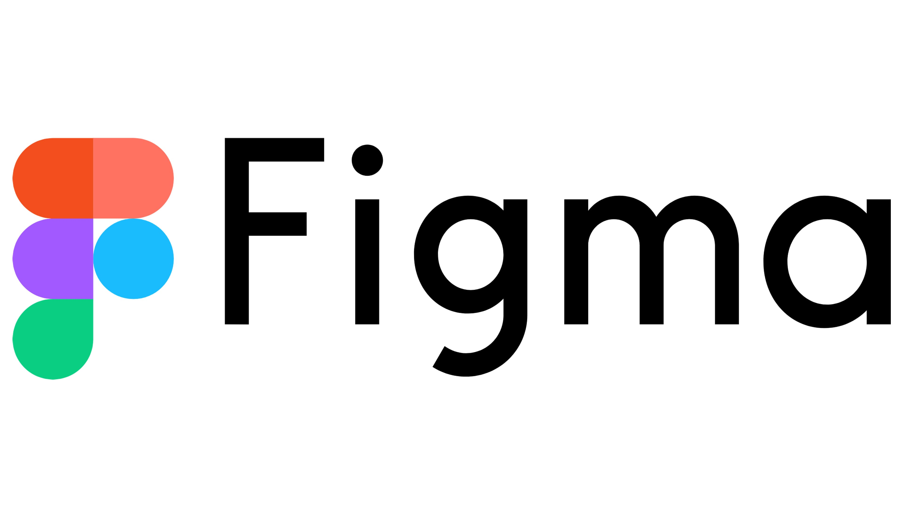
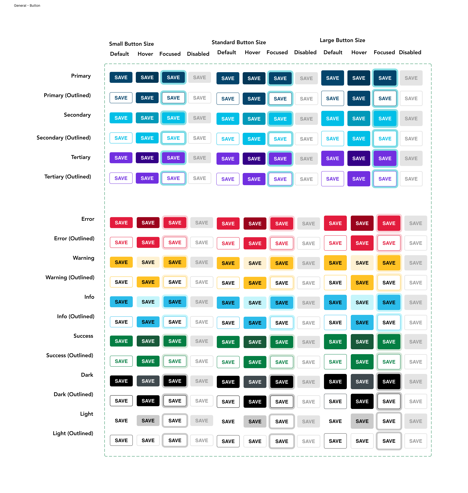
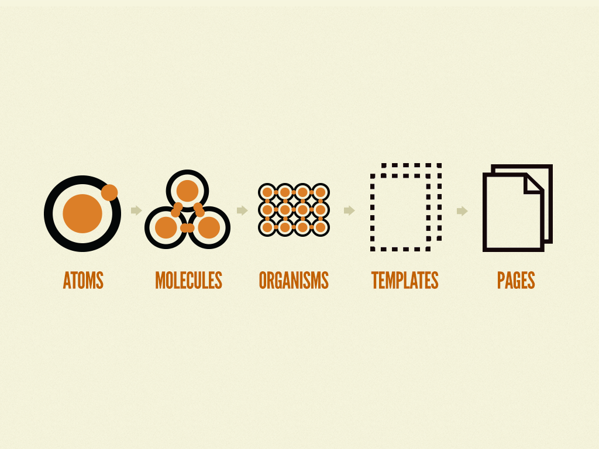

Figma Design System
I’m not allowed to disclose specifics for products from my company due to a non-disclosure agreement. Everything here stays generalized.
The Problem
My company, Explore Digits, was building a web application that they could possibly present to clients. The website hadn’t had any input from a UX designer, and was put together based off of another website that was a little outdated. I was tasked with creating the design system for the project, and also figuring out new features and user flows to add to the project that might improve it and make it more marketable to potential clients.
The How of Solving It
I had worked with Figma from college classes before, so I was familiar with creating a design system and wireframes. I went through the website first and also talked with the developers and the project manager about the purpose of the web application so I could get a better idea of what I was working with. The main input from the people I had talked to was that the application was still too close to the website they had based it off of, and they wanted to add their own company flair to the application, since we were going to market this as our product.

Brainstorming
I was creating the design system for this website while also working on the Explore Digits website. While my teammate and I ended up choosing a different layout for the ED website, while we were brainstorming for that project we established a color palette and general brand identity for the company that we wanted to use across products. The color palette included a shade of navy from the original ED website and the teal green accent color pulled from the ED logo. We used this color palette to create the layout for the button component first, and then started to gradually add more and more components.

Prototyping
I started in Figma with creating different variables and sections of the Figma file. I was using the atomic design structure to create the components and apply variables to components in Figma. This was a really useful design structure since it built off of already made components to make bigger and more complex patterns and templates, but still used all the same base components with the same variables applied.
I sent off my designs to the developer that was working on the web application, and he and I worked closely to start updating the design. Figma had a useful function, Developer Mode, which allowed him to see exact values for component sizes and colors. We worked together over several months to update the application bit by bit while also talking about different use cases for the application and different features we might want to add.

Testing and Iterating
After the initial update that we made to the application, we started working together with another company to release a collaborative version of this product. We would be editing the base app that we already had to fit their specific purpose. We already had a lot of the features they wanted initially, but there were a few other specific new things they wanted to add. I worked together with my teammate to come up with a new feature that was a more fleshed out process of one we had initially come up with. As we worked together with the other team, we got feedback about what is most helpful to them, and we also started to edit the design system to have a new look that fit with this version of the application.
Lessons Learned
In college I was taught the official design process and used Figma a lot and went through all the steps, but real life doesn’t always apply this process. I spent a lot of time in Figma creating the initial design system and then many hours editing it for every time we got feedback. This was good practice for learning the ins and outs of a design system and using Figma, but it wasn’t as practical to use, especially as the design world started to utilize AI more in the process. I ended up changing my design process to not use Figma as much, since I was one of two designers on the company design team, and using Figma and then passing off wireframes and working with developers and going back to Figma with edits was becoming a very slow process. I still was glad I learned Figma and the basic design system structure, since I still needed the principles of design in order to better use AI to accelerate design.